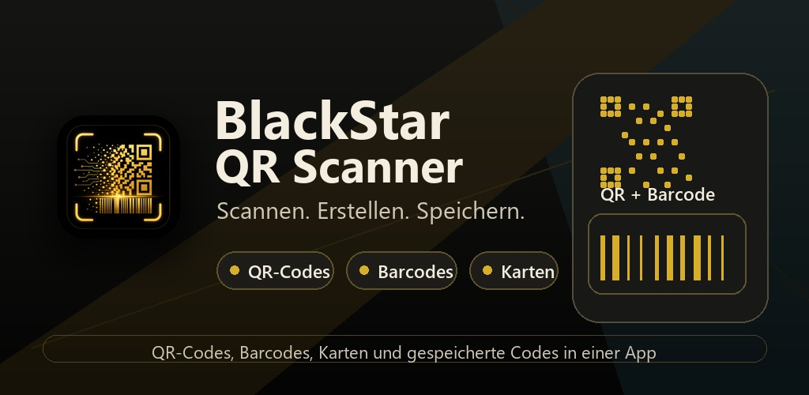
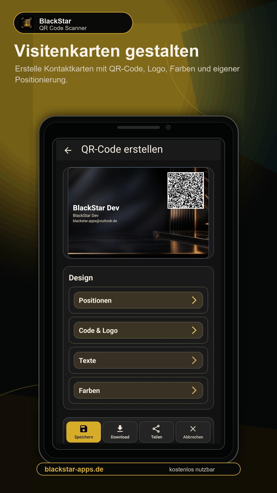
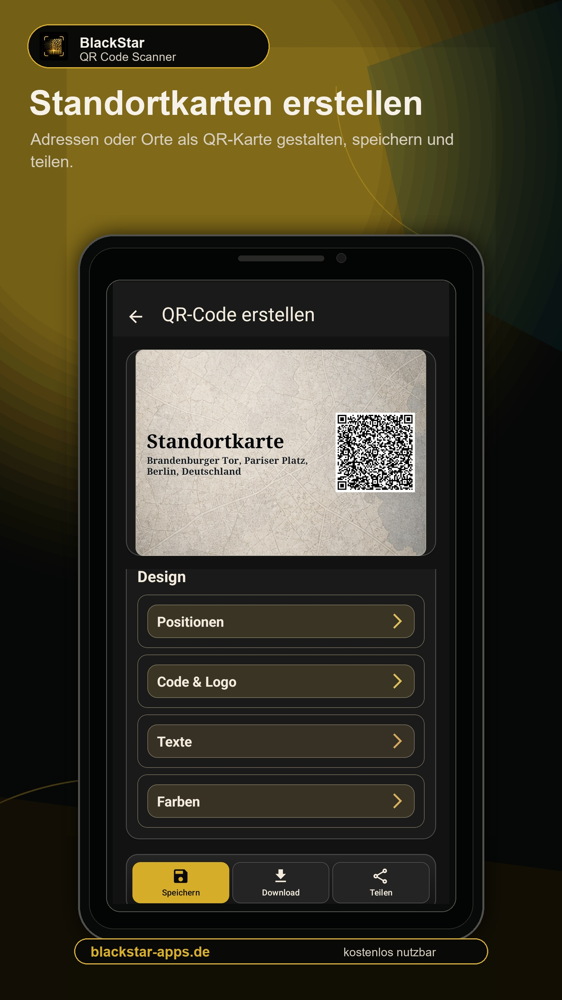
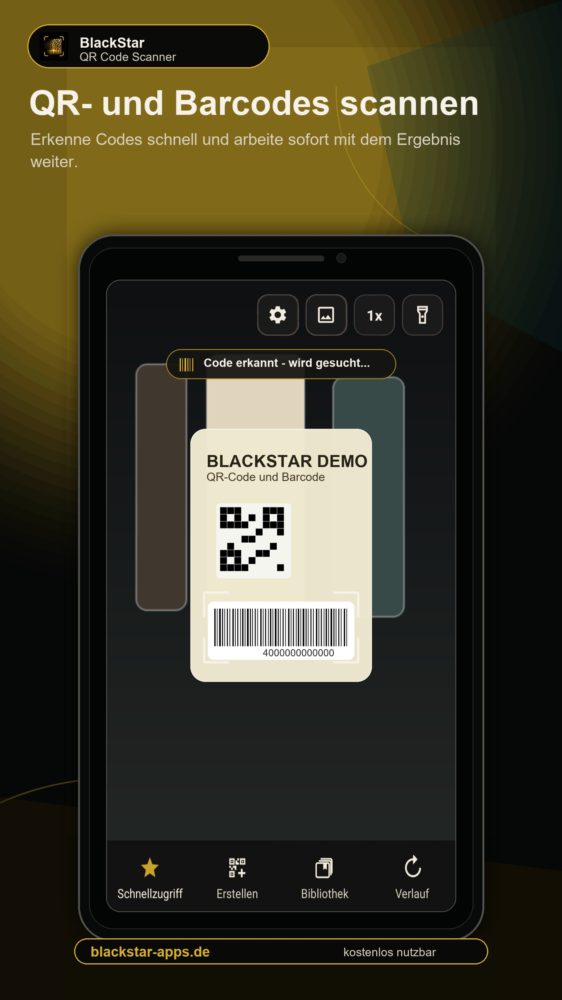
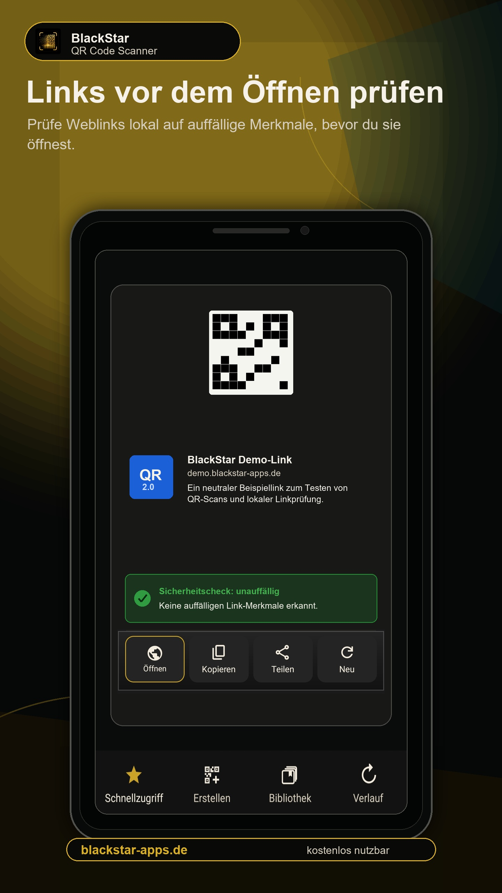
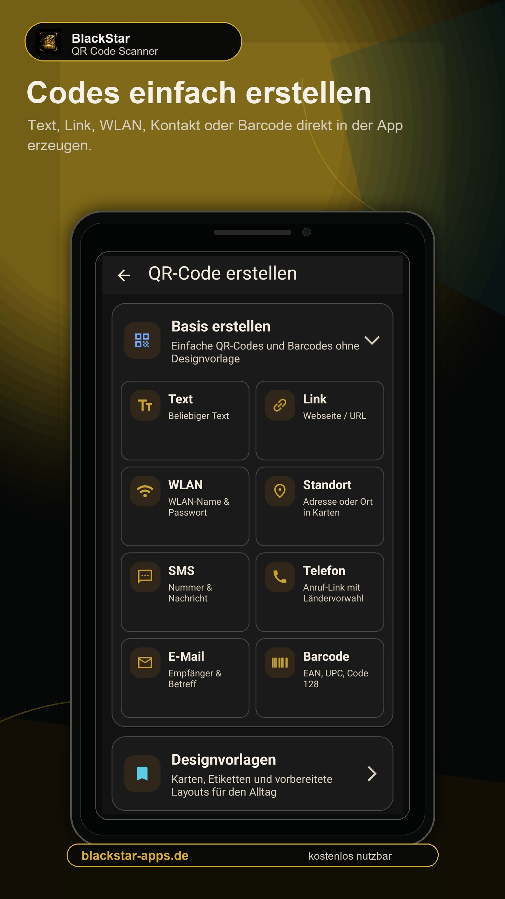
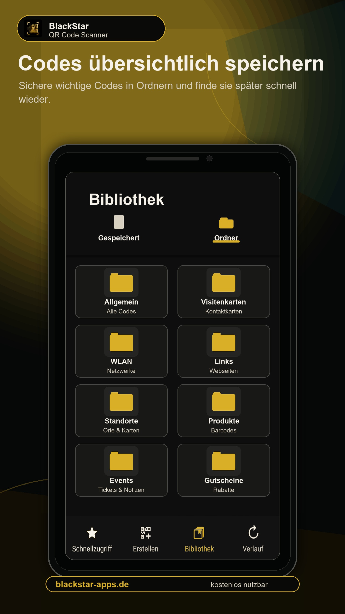
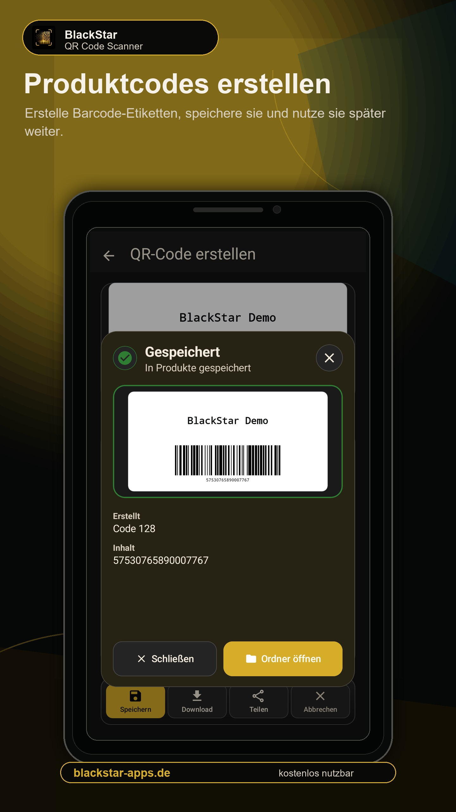
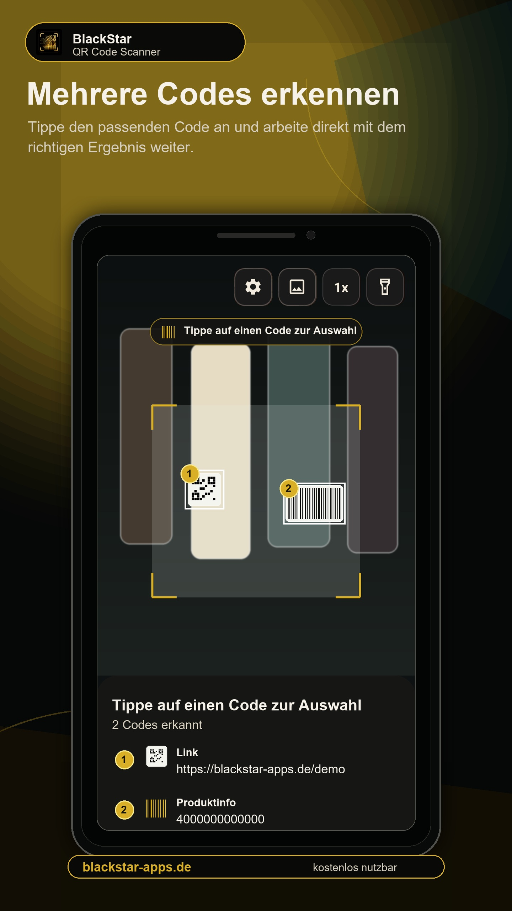
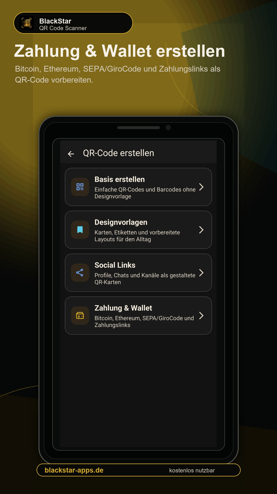

Sicher scannen
QR-Codes, Barcodes und Weblinks werden klar erkannt und verständlich dargestellt.

Kostenloser QR-Code Scanner und Generator
BlackStar QR Scanner verbindet schnelle Kamera-Scans, lokale Link-Hinweise, Produktinformationen, Code-Erstellung und eine übersichtliche Bibliothek in einer ruhigen Android-App.
Kostenlos nutzbar. Werbefrei nutzbar. Die App wird kontinuierlich weiterentwickelt.
App-Highlights
Die App verbindet Kamera-Scan, Code-Erstellung, Bibliothek, Vorlagen und lokale Sicherheits-Hinweise in einem ruhigen Dark-Design.
QR-Codes, Barcodes und Weblinks werden klar erkannt und verständlich dargestellt.
Erstelle QR-Codes für Text, Links, WLAN, Kontakte, E-Mail, SMS und Standorte.
Speichere gescannte und erstellte Codes lokal in Ordnern und nutze sie später erneut.
Produkt-Barcodes können Details anzeigen, kopiert und über externe Produktsuche oder Preisvergleiche weiterverwendet werden.
Was du erstellen kannst
BlackStar QR Scanner ist nicht nur zum Scannen da. Du kannst eigene Codes erstellen, gestalten, speichern und später wiederverwenden.
Text, Link, WLAN, Standort, SMS, Telefon, E-Mail und Barcodes.
Visitenkarte, Gäste-WLAN, Standortkarte, Event-Code, freie QR-Karte, Linkkarte, Produktkarte und Gutschein-Code.
Instagram, WhatsApp, YouTube, TikTok, Facebook, LinkedIn, Telegram und X als gestaltete QR-Karten.
Bitcoin, Ethereum, weitere Krypto-Adressen, SEPA/GiroCode und PayPal-Links mit passenden Sicherheitshinweisen.
QR-Karten und Visitenkarten
Gestalte QR-Karten mit Layouts, Farben, Schriftarten, Logo, Hintergrund und Positionen. Der QR-Code bleibt sichtbar, während Text und Design frei anpassbar sind.


Lokale Linkprüfung
Weblinks können direkt auf dem Gerät auf auffällige Merkmale geprüft werden, zum Beispiel unsichere Protokolle, verdächtige Zeichen, Kurzlink-Dienste oder sehr lange URLs. Die lokale Prüfung sendet den Link nicht an einen externen Sicherheitsdienst.
Highlights







Android-App